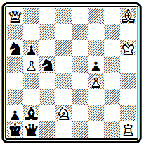

Международные конкурсы во Франции. Творчество французских композиторов.
Аноним из Лилля — Эрлен. Ламуру. Гродеманж. Прадинья
Шахматная композиция во Франции имеет глубокие корни. В Париже было выпущено первое издание сборника эндшпилей Стаммы. Здесь же в 1802 г. была издана интересная книга "Шахматные стратагемы или коллекция наиболее замечательных и курьезных шахматных позиций, как из обычных партий, так и искусственно составленных, выбранных из работ разных авторов, частично еще неопубликованных". Автор ее — Монтиньи — скрылся под псевдонимом "Любитель". Творчество французского композитора д'Орвилля явилось важным этапом в формировании и развитии современных принципов задачной композиции.
Во Франции с 1836 г. стал выходить первый в мире шахматный журнал "Паламед". Его издатель и редактор знаменитый Лабурдоне сам был композитором и вел в журнале регулярный отдел задач. С его смертью в 1840 г. издание прервалось и было вновь возобновлено в 1842 г. Сент-Аманом, продолжавшим его до 1847 г. Последний период существования журнала относится к гг., когда его (под несколько измененным названием — "Паламед франсэ") редактировал Журну.
В 1846 г. в Париже и одновременно в Лейпциге вышел сборник задач, составленный А. Александром.
Франция явилась организатором пяти из упоминавшихся ранее 14 больших международных конкурсов 50-70-х годов. Особенно интересно был задуман конкурс 1867 г., организованный в связи с шахматным конгрессом, приуроченным к международной выставке в Париже. Разрешение присылать в составе посылки из 6 задач половину ранее уже опубликованных и даже премированных делало этот конкурс своеобразным смотром достижений в развитии композиции по современным принципам.
Через два месяца после опубликования "индийской задачи" в апрельском номере "Паламед" за 1845 г. появилась задача № 000 "Анонима из Лилля".
№ 000
Т. Эрлен "Паламед" 1845
Мат в 4 хода
Ее решение очень интересно: 1. Крс7 Кра5 2. Cf6 Кра6 3. Cd8 Кра5 4. Крb7#. Оно несколько напоминает "индийскую задачу". Здесь белый слон также совершает маневр, переводящий его за критическое поле с7, которое занимает король, объявляющий затем мат на вскрышку. Отличие заключается в том, что ход слоном осуществляется не по самой критической линии, а по параллельной. В дальнейшем идея этой задачи получила название "обходный маневр Эрлена". Такова была действительная фамилия французского композитора, автора этой задачи.
Творчество Эрлена было не очень продуктивным. Выступал он редко. Наибольший его успех — II приз в конкурсе "Режанс" 1860 г., где он участвовал посылкой, состоявшей из 15 задач. Лучшие из задач Эрлена содержат интересные стратегические маневры, тонкие идейные нюансы, не потерявшие интереса и до настоящего времени.
В задаче № 000 ясно, что матовать необходимо батареей. Но в начальном положении белый слон атакован черным. Укрыться от его преследований можно только в угол, но там стоит своя же ладья. Ее надо увести.
№ 000
Т. Эрлен "Режанс" 1860 II приз

Мат в 4 хода
Решает уход с темпом — 1. Л:а4, создающий угрозу мата на а8 и потому вынуждающий слона покинуть диагональ b3-g8. Итак, 1... С:а4 2. Ca1. Напасть на слона белых теперь нельзя и как будто неизбежно 3. Лg4+ Се5 4. С:е5#. Однако защита находится - 2... Cf8. Теперь в случае 3. Лg4+? Cg7 4. С:g7+ мата действительно нет, но зато блокируется поле f8 и оказывается возможным 3. Лg8+ Кр:g8 4. Сс4#. Вот для чего понадобилось отвлечение слона b3! Видимо ни Эрлен, ни Умнов не заметили, что после отвлечения слона, кроме 2. Ca1 возможно и 2. Cf6 Ce7 3. Cc4! h5 4. Л:e7#. Чтобы не допустить этого, достаточно белого короля переставить на поле h4.-
Т. Эрлен "Режанс" 1860 II приз (версия)

Мат в 4 хода
Решение остается прежним. Добавляется еще такой вариант - 2... Ce7+ 3. Лg5+ Cf6 4. C:f6#.
В примере № 000 осуществлена интересная идея, которую позже стали называть идеей самоуничтожения. План белых очевиден, надо попасть ладьей на восьмую горизонталь, чтобы матовать с поля h8. Но все пути туда как будто наглухо заставлены собственными пешками. Белые изыскивают способ сыграть пешкой "а" таким образом, что вынужденные взять ее черные сами вскроют для ладьи вертикаль "а":
№ 000
Т. Эрлен "Режанс" 1860 II приз

Мат в 5 ходов
1. Крb2 Сb8 2. а7 С:а7 3. Ла1 Сb8 4. Ла8 Са7 5. Лh8# .
Черный слон действует как четко работающий клапан — в нужный момент он открывает магистрали для белой ладьи.
Любопытна позиция № 000, в которой "героем" неожиданно становится казалось бы безнадежно отставшая и блокированная пешка g2:
№ 000
Т. Эрлен "Режанс" 1860 II приз
Мат в 4 хода
1. Фf2 gf 2. g4 Cf(h)5 3. gf(gh) Kg6 4. f(h)g#.
Здесь портит впечатление дуаль на матующем ходу - 4. Л:f7#. Избежать этого можно такой корректировкой -
Т. Эрлен "Режанс" 1860 II приз (версия)
Мат в 4 хода
1. Фf2 gf 2. g4 Cf(h)5 3. gf(gh) Kg6 4. Л:f7#, правда роль отважной пешки преуменьшается...
Эрлену принадлежит одна из популярнейших двухходовок середины века № 000 -
№ 000
Т. Эрлен 50-е годы XIX век
Мат в 2 хода
Несмотря на кажущуюся простоту, она содержит некоторые тонкости и решается уходом ферзя в угол 1. Фh1, что оказывается единственным эффективным способом защиты обеих ладей.
В несколько ином стиле работал известный композитор Гродеманж. В своих лучших произведениях он ближе к творчеству немецких композиторов. Задача № 000 построена очень интересно -
№ 000
Э. Гродеманж Парижский конкурс 1867 III приз

Мат в 4 хода
Ходом 1. Ке4 белые создают угрозу мата конем на с5. Черные могут защищаться слоном h2. В зависимости от того, какое поле для слона — g1 или d6 — они изберут, выбирает поле отступления и белый слон d2. В результате получаются два варианта с перекрытием Новотного: 1... С:d6 2. Cf4 (освобождая поле d2 для угрозы мата конем) 2... Се7 3. Cd6 Л(С):d6 4. К:c5(d2)# или 1... Cg1 2. Сb4 Л:d6 3. Kd4+ Л(С):d4 4. K:c5(d2)#.
В проблеме № 000 белые тихими маневрами отвлекают черную ладью с ее сильной центральной позиции и получают возможность осуществить завершающую жертву:
№ 000
Э. Гродеманж "Режанс" 1860

Мат в 5 ходов
1. Лh1 Cd8 (грозило 2. Лh5#) 2. Ле1 Л:e1 (иначе 3. Л:е4#) 3. Ке2 (выключая черную ладью и грозя 4. d4#) 3... Лd1 4. К:f4 Кр:f4 5. Cd6#.
Своеобразный стиль отличает и произведения Ламуру. Его привлекали сложные тяжелые построения с картинными геометрическими маневрами белых или черных фигур. Рассматривая начальную позицию задачи № 000, трудно поверить, что черный король, который уже почти окружен в центре доски, получит мат на поле g8
№ 000
Д. Ламуру Лондонский конкурс 1862 (версия)

Мат в 5 ходов
После 1. Ле3, грозящего 2. Са2#, начинается марш черного короля, преследуемого белыми фигурами: 1... Kpd5 2. Се4+ Кре6 3. Ф:g4+ Крf7 4. Ф:g8+ Kp:g8 5. Cd5#.
(в оригинале вместо пешки g4 были белые пешки e6 и h3, что приводило к дуали на 3-м ходу)
В композиции № 000 белые имеют в виду матовать ладьей d6 c f2.
№ 000
Д. Ламуру "Паламед франсэ" 1865 I приз

Мат в 5 ходов
Для этого надо увести коня f2 с темпом, чтобы черные не успели построить защиту: 1. Ке4 (грозят сразу три мата, и ферзь вынужден брать коня) 1... Ф:е4 (оказывается, угроза 2. Лd2 не проходит из-за шахов белому королю, надо еще отвлечь черного ферзя от диагонали b6-g1) 2. Сb7 Ф:b7 3. Фа8 Ф:а8, и только теперь можно осуществить угрозу 4. Лd2 ~ 5. Лf2#.
В задаче № 000
№ 000
Д. Ламуру "Паламед франсэ" 1865 I приз (версия)

Мат в 5 ходов
черные препятствуют немедленному 1. Л:g4? ~ 2. Лg6# шахом 1... Ф:с2+!. Чтобы парировать эту возможность, белые связывают черного ферзя, играя своим ферзем в угол доски 1. Фа1. Черные подводят резервы 1... Kd3. Теперь конь закрыл диагональ с2-h7, по которой черные объявляли шах, и белый ферзь может последовать во второй угол доски 2. Фh1 (угрожая 3. Ф:f3+ ~ 4. Лf5#) 2... Лf2 3. Лf4+ (с темпом открывая диагональ для ферзя) 3... Л:f4 4. Фа8. Ферзь попал в третий угол доски, чтобы следующим ходом объявить мат с последнего углового поля 5. Фh8#.
К теме обхода ферзем всех угловых полей доски Ламуру еще не раз возвращался в своем творчестве.
Преемником и продолжателем Ламуру в ранний период деятельности был видный французский проблемист Эмиль Прадинья. Начав составлять задачи в 1873 г., он продолжал успешно выступать и в начале нынешнего века. Итоги первого десятилетия творчества Прадинья отражены в сборнике 100 лучших его произведений, выпущенном в 1883 г. (23).
Задача № 000 построена на использовании геометрических мотивов. Сначала ферзь, а затем слон далекими ходами занимают угловые поля доски.
№ 000
Э. Прадинья Парижский конкурс 1878

Мат в 4 хода
1. Фf3 f5 2. Фа8 Кbа6 3. Ch8 и т. д.
Любопытна финальная позиция цугцванга: главные белые фигуры стоят в трех углах доски, а в четвертом находится черный король -

Другой вариант проще, но заканчивается правильным матом: 1... Кbа6 2. Фе4 С:с3 3. Л:b1+ ab 4. Ф:b1#. Автору удалось осуществить свой замысел в относительно легкой и экономичной форме.
Однако Прадинья нередко выступал с задачами, имеющими столь сложное построение, такое обилие фигур, что в них очень трудно было добраться до сути. По сложности некоторых своих произведений он превзошел, пожалуй, даже своего учителя Ламуру. Примером может служить задача № 000
№ 000
Э. Прадинья Парижский конкурс 1878
Мат в 3 хода
Основная идея ее заключается в главном варианте с бристольским освобождением линии для ферзя: 1. Лf8 fe 2. Фf7 Крс2 3. К:е3#. Ферзь стремился на f7 для того, чтобы при объявлении мата конем отнять у черного короля поле b3. После первого хода черные в цугцванге: 1... Kpe1 2. Kg3+; 1... Крс2 2. С:d3+.
Сложное построение композиции совсем не является неизбежным. Сам автор доказал это, когда через пару десятилетий, в 1895 г., выступил с ее переработкой, в которой ему удалось снять с доски ни мало ни много — 6 фигур при полном сохранении основного идейного содержания!
Э. Прадинья "Франкфуртер тагеблат" 1895 почетный отзыв
Мат в 3 хода
1. Лd8 de 2. Фd7 и т. д.
Последняя задача (№ 000) входила в посылку Прадинья, которой судьи Парижского конкурса 1878 г. в предварительном присуждении дали I приз. В дальнейшем, однако, обнаружилось, что Прадинья нарушил условия конкурса, послав на него одновременно еще две посылки под другими девизами. Обе они были оценены также высоко: получили IV приз и почетный отзыв. Решением судейской коллегии все посылки Прадинья были дисквалифицированы.
К концу столетия Прадинья, не без влияния немецких композиторов, несколько меняет свой стиль. Он больше начинает интересоваться финальной комбинацией, непосредственно завершающейся матом, тем, что Бергер называл "матфюрунгом". Уже в ранних произведениях Прадинья встречалась эффектная заключительная жертва ладьи. В дальнейшем такая комбинация, проводимая, как правило, на соседнем с королем поле по диагонали, становится основной идеей многих его композиций.
В задаче № 000 такое пожертвование ладьи осуществляется уже первым ходом.
№ 000
Э. Прадинья "Миррор оф америкэн спортс" 1885 I приз

Мат в 4 хода
1. Kf3 (грозит 2. Ле5#) 1... fе 2. Фg5#; 1... Кр:е4 2. Ле6+ Kpd5 3. Ле5# или 2... Kpf4 3. Фg3#. Главный вариант возникает при взятии ладьи слоном 1... С:е4. Слон угрожает взять еще коня f3, и для его отвлечения белым не жаль ферзя 2. Фс2 (создавая угрозы на b3, с4 и на с5 — 2... Ла4 3. Ф:с5+ Ф:с5 4. Кс7#) 2... С:с2, а теперь снова та же комбинация уже второй ладьей — 3. Ле6, грозит 4. Ле5#, а на 3... Кр:е6 следует правильный мат 4. Сс4#. Дополнительный вариант: 1... С:b5 2. Лd4+ cd 3. Kh4+ Kpe5 4. К:g6#.
Следствием пересмотра идейных позиций явилось и сокращение числа ходов в задачах. Основной формой творчества Прадинья в последние годы стали трехходовки. В проблеме № 000 комбинации с двойной жертвой ладьи проводятся в двух параллельных вариантах:
№ 000
Э. Прадинья "Иллюстрирте фамилиен журналь" 1896 I приз

Мат в 3 хода
1. Ле6 С:е6 2. Лd5 С:d5 3. Фg6#, 2... Кр:d5 3. Фb7#; 1... Kpf5 2. Фb7 С:е6 3. Фh7#, 2... Кр:е6 3. Фd7#. Оба мата в первом варианте — правильные.
Прадинья все больше внимания обращает на правильность матовых позиций. Приведем пример (№ 000), где, помимо идейного варианта с типичной жертвой ладьи, проходят два дополнительных варианта с правильными матами.
№ 000
Э. Прадинья "Нуова ривиста дель скакки" 1897 I приз

Мат в 3 хода
Первым ходом 1. Kd5 белые перекрывают слона с6 и создают угрозу 2. Cd3. После 1... С:d5 блокировано поле d5 и реализуется жертва ладьи: 2. Кb5 Кр:е4 3. К:d6# или 2... С:е4 3. Kd4# (мат только чистый, но неэкономичный, ибо слон а6 в нем не участвует). Дополнительные игры: 1... Кр:е4 2. f3+ Кр:d5 3. Сс4# и 1... Се3 2. Ке7+ Кр:е4 3. f3#.
Последние примеры по своему стилю весьма близки к работам венской группы композиторов конца прошлого века.
Творчество французских композиторов XIX века было весьма плодотворным и явилось значительным вкладом в развитие современной композиции. Однако в этом творчестве не было такой целеустремленности и направленности, которые позволили бы французским композито